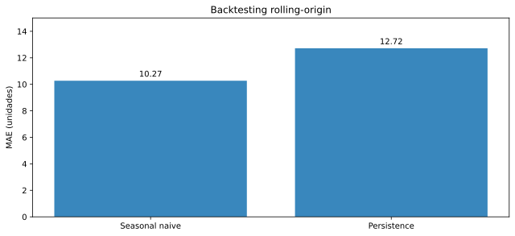

Séries temporais / estudo auditável
Demanda industrial — backtesting temporal
Dataset e resultados são criados por algoritmo com seed documentada; não são dados observados de indústria.
DEMONSTRAÇÃO SINTÉTICA. Os indicadores são calculados, mas não possuem validação externa nem representam ganhos reais de empresas.
Problema e decisão
Comparar erros históricos com custos de estoque antes de definir políticas de reposição.
Método verificável
Rolling-origin um passo à frente: média/feature não pode usar t ou datas futuras; predição = demanda t−7 contra persistência t−1, WAPE e MAE.
Métricas calculadas
rolling test days110
training min days150
mae units10.27
baseline mae units12.72
wape pct7.22
Visualização

Reprodutibilidade e fontes
Código Python ↗Dataset CSV ↗Métricas JSON ↗
python -m pip install -r requirements-case-studies.txt python case_studies/analytics.py python -m unittest discover -s tests -v
Limitações e próxima etapa
Sazonalidade criada por fórmula e ruído artificial, não uma série econômica observada.
Para uso empresarial, validar a procedência, granularidade, leakage, custo de erro, premissas do KPI e a generalização dos modelos.